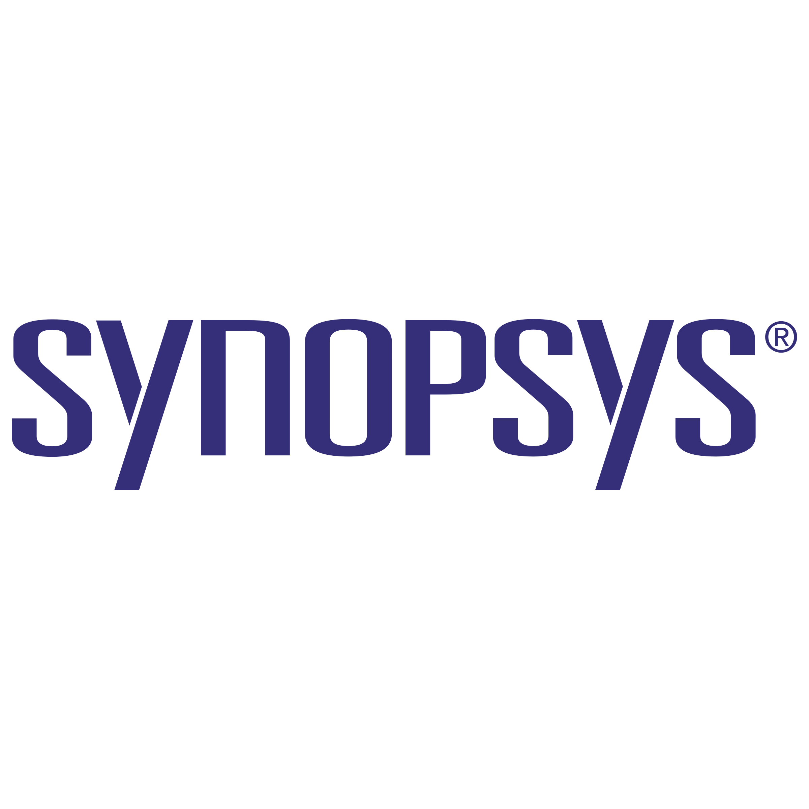
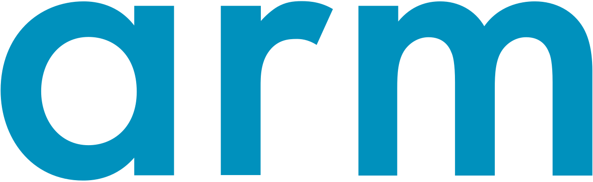

The Ecosystem
-
📖
Visual & Structured Learning Master complex concepts like UVM hierarchy and timing diagrams through interactive platforms, visual blocks, and flowcharts.
-
💻
Cloud Simulator IDE Write, compile, and debug instantly in your browser. We remove the friction of environment setup so you focus on design.
-
📊
Assessment Tracking Quantify your readiness. Take module-wise quizzes, track your analytics, and ensure you're interview-ready.
Why Train With Us?
100% Hands-On Focus
Deploy your knowledge immediately. Theory is followed by rigorous daily coding, treating the terminal as your primary environment.
Specialized for DV Roles
Unlike generic VLSI courses, we hyper-focus on Design Verification using SystemVerilog and UVM—the most lucrative skillset.
Industry Standard Protocols
Bridge the "fresher gap" by working on live projects implementing protocols like AXI, AHB, and APB.
Targeting Top Giants

